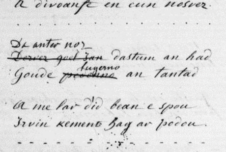

An Den kozh dall
Ballade recueillie à Prat en 1830 par Jean- Marie de Penguern (1807 - 1856)
Collection Penguern, Bibliothèque Nationale, Département des Manuscrits
Fonds celtique, vol. 94, fol. 144-7
(Selon Donatien Laurent dans "Nuit celtique", p.232)

Mélodie
(Al leanez)
Kempennet gant Christian Souchon (c) 2008
|
La mélodie est inconnue. Celle-ci est donnée à titre indicatif. Le site "to.kan.bzh" (TO pour "Tradition Orale") est une base de données en ligne qui liste les occurrences de chansons traditionnelles en langue bretonne. Il utilise la classification élaborée par Patrick Malrieu, fondateur et ancien président de l'association Dastum ("collectage" en breton). Il apparaît que ce catalogue TO, regroupe sous le même N°, M-00252 et le même "titre critique", Diougan Gwenc'hlan (La prophétie de Gwenc'hlan) le poème du Bazhaz N°2 et la présente pièce, bien que les résumés qu'il en donne n'aient rien en commun. |
The tune is unknown. The above melody is given as a suggestion. The site "to.kan.bzh" (TO for "Oral Tradition") is an online database listing the occurrences of traditional songs in Breton language. It uses the classification developed by Patrick Malrieu, founder and former president of the Dastum society ("dastum"="collection" in Breton). It appears that the TO catalog regroups under the same number, M-00252, and the same "critical title", Diougan Gwenc'hlan (The prophecy of Gwenc'hlan), the poem of Bazhaz N ° 2 and the piece at hand, although the summaries given for them don't have anything in common. |
AN DEN KOZH DALL |
LE VIEILLARD AVEUGLE |
THE OLD BLIND MAN |
Notes:
|
[1] Bien que la malédiction de la strophe 1 se retrouve au début des Jeunes hommes de Plouyé et que les strophes 2 et 3 fassent penser à La submersion d'Is, du fait que le poème met en scène un barde aveugle vivant sur le littoral trégorrois, à en juger par le dialecte, La Villemarqué voyait en ce "vieillard aveugle" le héros du chant par lequel s'ouvrait en 1839 la première édition du Barzhaz: Guiclan qu'il appelle Gwenc'hlan.. Il connaissait la teneur, mais peut-être pas le texte exact de ce poème: 11 lignes de son 3ème carnet de collecte, p.23, sans doute notées en 1843, indiquent qu'il tient la conversation entre "Gwinklan et son fils" d'un certain Moal de Trébeurden. "Gwinklan voulait trouver une bonne terre où bâtir; il allait de pays en pays, monté sur un petit cheval des montagnes et conduit par son fils qui tenait la bride : - Arrivé dans un certain champ: - Attache, mon fils, lui dit-il attache mon cheval à une plante de bardelle. - Je nen vois pas répondit lenfant, il n'y a ici que du "brulu" ; - Allons, allons! répond Gwinclan... -" Il ajoute "Il est surtout connu sous le nom d'"An den kozh dall"... "An den kozh dall a lavare". Il écrit page XXIV de l'introduction à l'édition de 1867: "Gwenc'hlan est toujours aussi célèbre... [à] en juger par le peu de vers que la tradition populaire a sauvé du naufrage [=la Révolution]. Il s'y montre sous un double aspect: comme agriculteur et comme barde guerrier. L'agriculteur [...] est un pauvre vieillard aveugle. Il va de pays en pays, assis sur un petit cheval des montagnes que son fils conduit par la bride. Il cherche un champ à cultiver et où il pourra bâtir. Comme il sait quelle plante produit la bonne terre[...] il demande à l'enfant: "Mon fils vois-tu verdir le trèfle - Je ne vois que la digitale fleurir, répond l'enfant. - Alors, allons plus loin!" reprend le vieillard [...] Il indique à son fils les engrais les plus propres à fertiliser le sol et l'ordre des travaux que la culture exige, selon les différentes saisons. La conclusion de ses leçons d'agriculture est très encourageante: "Avant la fin du monde la plus mauvaise terre produira le meilleur blé". La note qui suit le chant "Gwenc'hlan" nous apprend qu'il s'agirait avec cette dernière phrase d'une citation du dictionnaire de D. Le Pelletier. En réalité elle ne s'y trouve pas. La Villemarqué l'a empruntée à la préface de Miorcec de Kerdanet pour sa réédition, en 1837, de la "Vie des Saints" d'Albert le Grand. Curieusement, la seconde partie du dicton ("an douar fallañ a roy gwellañ ed" = la pire terre donnera le meilleur blé) se trouve réellement dans le "Dialogue de Gwenc'hlan et du roi Arthur", daté de 1450, dont la copie par le Père Dom Pelletier ne fut retrouvée qu'en 1924. [2] L'anathème contre les routes et le désenclavement qui fait l'objet des strophes 26 à 30, et dont La Villemarqué n'aurait pas manqué de parler s'il avait eu la présente version de ce chant entre les mains, est au cur d'un autre poème magnifique de la collection de Penguern, La vieille Ahès [3] Avec raison, M. Donatien Laurent, souligne en 1989, dans son ouvrage "Aux sources du Barzaz Breiz", combien les problèmes agricoles soulevés par ce chant, usage abusif des engrais, importance du talutage et des haies vives en zone littorale, équilibre entre terrains agricoles et terrains à bâtir... sont plus que jamais à l'ordre du jour. Guinclan, si c'est bien de lui qu'il s'agit, était-il vraiment devin? [4] Ni la transcription KLT, ni les traductions ne sont garanties pour les strophes 23 et 25. L'original trégorrois est le suivant: 23. Ar gwinis penivit he vez a divoanfe en eun nosvez 25. A me lar did bean e spou irvin kement ag ar podou où les mots "penivit", "bean", "e spou" sont peut-être mal interprétés. [5] La figure de l'aveugle agronome: Des éléments nouveaux sont apportés par M. Daniel Giraudon dans son beau livre, "La clé des chants" paru chez Yoran Embanner en 2020 (p.408). Le texte breton qu'il cite comprend deux passages rayés sur le manuscrit Penguern, Ms 94, p.146, (cf. photo en bas de page): - "Dervez goel Jan"="Devezh Gouel Yann..."="Le jour de la saint -Jean..." remplacé par "Da hanternoz..."="A minuit" (recueille la graine) et - Goude pedennoù"="Après les prières [devant]" remplacé par "Goude lugernañ"="Après avoir allumé" (Le brasier). Tout comme la traduction étymologique "feu-père" pour "tantad" signifiant "brasier", "feu de joie"- , le rappel de ces mots rayés insiste sur le caractère magique de ce rite pratiqué à minuit. Cela établit un lien avec une autre thématique: la graine de navet, sans avoir de vertu thérapeutique, est à rapprocher des "herbes de la saint-Jean" telles que la verveine, l'orpin, le millepertuis etc. dont parle Gwenc'hlan Le Scouézec dans son ouvrage "Bretagne, terre sacrée" (cf; Herboristerie bretonne). "Raok kaout un irvinenn raz ar c'harr, Eo ret kaout teil kozh pe gozh douar." "Avant d'avoir un navet qui remplisse la charrette à ras bord Il faut du vieux fumier ou une jachère." Ce récit ne figure pas parmi les "Contes du soleil et de la brume" (1905), où Le Braz reproduit quelques faits relatés par Marc'harid Fulup à propos de celui qu'il appelle "Gwenc'hlan", comme La Villemarqué (qu'il l'accuse sinon volontiers d'affabulation). On se demande en outre pourquoi le grand ami de Le Braz, François-Marie Luzel qui avait la même informatrice que celui-ci, affirme n'avoir jamais entendu parler de Gwenc'hlan, appelé "ur Warc'hlan", "un certain Gwarc'hlan", que par une femme de Louargat...Ce n'est pas la seule fois que l'on est amené à douter de la franchise et de l'impartialité de Luzel... En l'occurrence, cette citation confirme que l'identification de l'agronome aveugle avec le prophète du Menez-Bré, Guinclan, n'est pas imputable à l'imagination de La Villemarqué, mais qu'elle est ancrée dans les croyances populaires. Ce genre de récits sans lien avec la légende de Guinclan, mais faisant systématiquement intervenir un aveugle agronome, se retrouve, un peu partout en Bretagne et ailleurs, par exemple au Pays basque, en Navarre et en Irlande...On attendait l'Ecosse dont le chardon est l'emblème! En certains endroits l'historiette est liée à une "stratégie matrimoniale" (Charles Videgain: "Les récits de la menthe en domaine basque"). Personne, avant M. Giraudon, n'avait relevé l'ubiquité de ce thème. [5 bis] Autre figure d'aveugle M. Giraudon m'a fait l'amitié de me communiquer ce qui suit. On voit qu'il y a une vingtaine d'années, un collecteur expérimenté pouvait encore faire des découvertes stupéfiantes: "Jai recueilli à Ploubezre un autre récit [Enquête personnelle, Emile Allain, Ploubezre, 27 janvier 2003] impliquant les connaissances dun aveugle, mais cette fois à propos des navets fourragers : « Ur wech oa un, dall oa, hennezh ouie, lâre ket d'an dud para. Un devezh oa an dud esañ goul gantañ : - Pegoulz 'mañ ar c'houlz da hadañ sort-mañ-sort ? Peus ket met ober vel a gerfet. Hag un devezh oa un tremen gant e garg, ur garg irvin dourek ! O damen vo ma ene, a zo un tremen gant un dimporell irvin dourek ha n'eus ket met un ha leun ar c'harr dionte. O, ya, 'meañ, moien zo, ma vez hadet an irvin dourek diskar loar ouerenn marteze vefe moien d'ôr ur garg all ma-un(an) ha vel-se deva gouveet. Il ne voulait pas dire quand cétait le meilleur moment pour semer mais il avait fini par le dire comme ça », "Il était une fois un homme, il était aveugle, lui savait mais il ne le disait pas aux gens. Un jour, les gens avaient essayé de lui demander : - Quel est le meilleur moment pour semer telle ou telle chose ? - Vous navez quà faire comme vous voulez. Et un jour, quelquun passait avec une charretée de navets fourragers ! Oh, que mon âme soit damnée, en voici un qui passe avec un tombereau de navets, il ny en a quun seul et le tombereau est plein. Oh, oui, dit-il, cest possible, si on sème les navets à la lune descendante de juillet. Peut-être je pourrais en faire une autre charretée seul ; et comme ça ils avaient su. Il ne voulait pas dire quand cétait le meilleur moment pour semer mais il avait fini par le dire comme ça ». |
[1] Though the curse in stanza 1 is the same as in The young men of Plouyé and the stanzas 2 and 3 recall the submersion of Is, since the present ballad features a blind bard - who is moreover a native of the Tréguier sea side district, as the dialect used clearly shows -, La Villemarqué concluded that this old blind man was identical with the protagonist in the song ushering in the first 1839 edition of the Barzhaz: Guiclan whom he names Gwenc'hlan. He was roughly aware of the contents but maybe not of the exact words of the piece at hand: 11 lines in his 3rd collection book, p.23, very likely written in 1843, state that he learned the dialogue between "Gwinklan and his son" from a named Moal of Trebeurden . "Gwinklan wanted to find a good soil on which to build a house; he went from country to country, mounted on a mountain pony and led by his son who held the bridle: - Arrived in a certain field: - Tie up, my son, he said to him, tie up my horse to a burdock plant! - I don't see any, answered the child, there is only "brulu" (foxglove) here; - Let us go along! answered Gwinklan ... - " He added: "He is best known as "An den kozh dall "..."An den kozh dall a lavare ". He writes on page XXIV of the introduction to the 1867 edition: "Gwenc'hlan is as celebrated now as he was in former times... judging from the few verses salvaged from the wreckage [=the French Revolution] by oral tradition. He is twofold in appearance: both a farmer and a bard warrior. The farmer [...] is a poor old blind man; travelling the countryside on his small mountain (?) horse that his son holds on the lead. He is looking for land to till and a place to put up his house. As he knows which plant thrives on a good soil,[...] he asks the boy: "My son, do you see green clover patches (?)? - I see nothing but foxgloves in plenty, answers the child. - Off with us," says the old man. [...] He teaches his son which manure is best for fertilizing soils (?) and the succession of farming works depending from the time of year. The conclusion of his teaching is an encouraging one: "Before doomsday the poorest soil shall yield the best wheat". The note following the song "Gwenc'hlan" states that this verse is supposed to be quoted from D. Le Pelletier's dictionary. In fact it is not. La Villemarqué borrowed it from the preface written by Miorcec de Kerdanet who re-published, in 1837, the "Lives of the Saints of Brittany" by Albert le Grand. Astonishingly, the second part of the saying ("an douar fallañ a roy gwellañ ed" = the worst earth shall yield the best wheat) is really included in the "Dialogue of Gwenc'hlan and King Arthur", dated 1450, whose copy by the Reverend Dom Pelletier was not retrieved until 1924. [2] The curse on roads and highways which we find in stanzas 26 till 30, and that La Villemarqué would not have failed to mention, if he had read the present version of the ballad, plays a pivotal part in another splendid poem kept in the Penguern collection: The Hag Ahès [3] M. Donatien Laurent is right when he stresses in his 1989 book "Aux sources du Barzaz Breiz", how much the agricultural issues addressed in this song: inconsiderate fertilizing, importance of quickset hedges and drains in sea side areas, keeping apart fertile soils and building sites...have become topicality arguments of late. Was not Guiclan, if the song is really about him, a genuine seer? [4] The accurateness of both KLT transcription and translation of stanzas 23 and 25 is not guaranteed. The Tréguier dialect original reads as follows: 23. ar gwinis penivit he vez a divoanfe en eun nosvez 25. a me lar did bean e spou irvin kement ag ar podou where the words "penivit", "bean" and "e spou" are perhaps misconstrued. [5] The figure of the blind agronomist : New elements are developed by M. Daniel Giraudon in his important book "La cle des chants" published by Yoran Embanner in 2020 (p.408). The Breton text he quotes includes two crossed out passages from the Penguern manuscript, Ms 94, p.146, (see photo at the bottom of the page): - "Dervez goel Jan" = "Devezh Gouel Yann ..." = "On St. John's day ..." replaced by "Da hanternoz ..." = "At midnight " (collect the seed) and - Goude pedennoù "=" After the prayers [in front of] " replaced by " Goude lugernañ "=" After having lit " (the bonfire). Just like the etymological translation "feu-père" (father-fire) for "tantad" meaning "bonfire" - recalling these crossed out words insists on the magical character of this rite practiced at midnight. This creates a link with another theme: turnip seed, without having any therapeutic virtue, is paralleled to "St. John's herbs", such as verbena, stonecrop, St. John's wort etc. addressed by Gwenc'hlan Le Scouézec in his book "Bretagne, terre sacrée" (cf; Breton herbal ). "A woman says to her husband: 'Lay a bedsheet over the cart and when Guinclan asks you what is underneath it, you will say: a big turnip filling out my cart' (un irvinenn raz ar c'harr). When he drove his cart past the courtyard of Run-ar-Gof house, he began to crack his whip to call for attention. "What's the matter?" Guinclan asked, putting his head out of the window. The man shouted back: "A turnip filling my cart to the brim! D'you hear? D'you hear? (Klev! Klev!): "Raok kaout un irvinenn raz ar c'harr, Eo ret kaout teil kozh pe gozh douar. "To get a turnip filling a cart to the brim You need old manure or fallow." This story would have deserved featuring among the "Tales of the Sun and the Mist" (1905), embodying facts ascribed by Marc'harid Fulup to the magician whom Le Braz names "Gwenc'hlan", like La Villemarqué, though he usually suspects him of forgery. We also wonder why Le Braz' great friend, François-Marie Luzel who resorted to the same informant, claimed to have heard only once of Gwenc'hlan, called "ur Warc'hlan" , "a certain Gwarc'hlan", by a Louargat woman. It is not the only time when Luzel's straightforwardness and unbiasedness could be questioned. In the present case, this quote confirms that the identification of the blind agronomist with the prophet of Menez-Bré, Guinclan, is not ascribable to the imagination of La Villemarqué, but it is rooted in popular beliefs. This kind of stories, disconnected from the Guinclan legend, but usually involving a "blind agronomist", can be found throughout Brittany and almost everywhere : in the Basque Country, in Ireland, in Navarre ... Surprisingly M. Giraudon does not mention Scotland, whose emblem is thistle! In some places this story is linked to a "matrimonial strategy" (as stated by Charles Videgain in his "Stories about mint in the Basque countries"). No one, before M. Giraudon, had noted the ubiquity of this theme. [5 bis] Another blind character M. Giraudon was kind enough to forward to me the following record from which we infer that, twenty years ago, an experienced collector could still make amazing discoveries: "I collected in Ploubezre another story [A personal investigation, Emile Allain, Ploubezre, January 27, 2003] involving a blind man's knowledge,in the present instance about fodder turnips: « Ur wech oa un, dall oa, hennezh ouie, lâre ket d'an dud para. Un devezh oa an dud esañ goul gantañ : - Pegoulz 'mañ ar c'houlz da hadañ sort-mañ-sort ? Peus ket met ober vel a gerfet. Hag un devezh oa un tremen gant e garg, ur garg irvin dourek ! O damen vo ma ene, a zo un tremen gant un dimporell irvin dourek ha n'eus ket met un ha leun ar c'harr dionte. O, ya, 'meañ, moien zo, ma vez hadet an irvin dourek diskar loar ouerenn marteze vefe moien d'ôr ur garg all ma-un(an) ha vel-se deva gouveet. Il ne voulait pas dire quand cétait le meilleur moment pour semer mais il avait fini par le dire comme ça », "There was back then a man. He was blind, he knew a lot but he would tell nothing. Should someone ask him: - When is the best time for sowing this or that? - he would answer - Just do as you please. Now one day, as someone passed by with a cartload of forage turnips, a peasant exclaimed Oh, my soul be damned, here's one passing by with a dump cart of turnips. There is but one turnip in it and the cart is full." "Oh," said the blindman, "this is achievable with turnips sown at the waning moon of July. To be sure, I could get another cartload by myself - ;And that's how people came to know. He didn't want to say when it was the best time for sowing, But that's how he eventually said it. |

MS 94 Penguern, p.146; Passages rayés
Dervez gouel Yann...Goude pedennoù an tantad
Le Jour de la Saint-Jean ...Après les prières au brasier.
Dialogue entre Arthur et Guynglaff
"Er Roe Stevan" (Abbé JM. Guilloux)
"Prophétie de Gwenc'hlan" (Barzhaz)
Retour à "Gwenc'hlan"
Taolenn